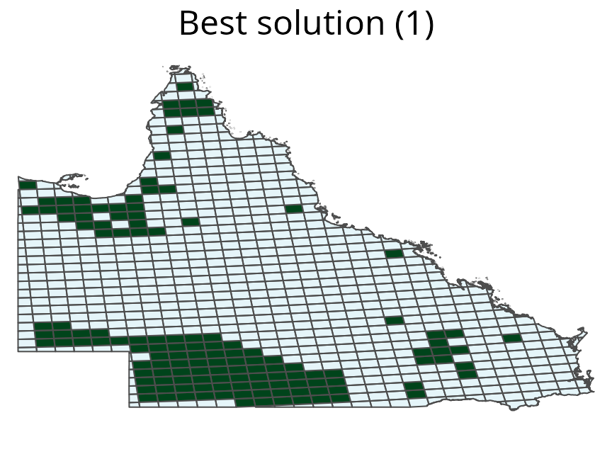

raptr: Representative and Adequate Prioritization Toolkit in R
Source:vignettes/raptr.Rmd
raptr.RmdOverview
This vignette illustrates the basic usage of the raptr R package.
To load the raptr R package and learn more about the package, type the following code into R.
The raptr R package uses a range of S4 classes to store conservation planning data, parameters, and prioritizations (Table 1).
Table 1: Main classes in the raptr R package
| Class | Description |
|---|---|
ManualOpts |
place-holder class for manually specified solutions |
GurobiOpts |
stores parameters for solving optimization problems using Gurobi |
RapUnreliableOpts |
stores control variables parameters for the unreliable problem formulation |
RapReliableOpts |
stores control variables for the reliable problem formulation |
DemandPoints |
stores the coordinates and weights for a given species and attribute space |
PlanningUnitPoints |
stores the coordinates and ids for planning units that can be used to preserve a given species |
AttributeSpace |
stores the coordinates for planning units and the demand points for each species |
RapData |
stores the all the planning unit, species, and attribute space data |
RapUnsolved |
stores all the data, control variables, and parameters needed to generate prioritizations |
RapResults |
stores the prioritizations and summary statistics generated after solving a problem |
RapSolved |
stores the input data and output results |
Getting started
This tutorial is designed to provide users with an understanding of how to use the raptr R package to generate and compare solutions. This tutorial uses several additional packages, so first we will run the following code to load them.
# load packages for tutorial
library(parallel)
library(plyr)
library(dplyr)
library(ggplot2)
# set seed for reproducibility
set.seed(500)
# set number of threads for computation
threads <- as.integer(max(1, detectCores() - 2))Now we will check if the the Gurobi software suite and the gurobi R package are installed. To do this, run the following code.
is.GurobiInstalled(verbose = TRUE)## [1] TRUESimulated examples
Data
To investigate the behavior of the problem, we will generate prioritizations for three simulated species. We will use the unreliable formulation of the problem to understand the basics, and later move onto the reliable formulation. The first species (termed ‘uniform’) will represent a hyper-generalist. This species will inhabit all areas with equal probability. The second species (termed ‘normal’) will represent a species with a single range core. The third species (termed ‘bimodal’) will represent a species with two distinct ecotypes, each with their own range core. To reduce computational time for this example, we will use a 10 \(\times\) 10 grid of square planning units.
# make planning units
sim_pus <- sim.pus(100L)
# simulate species distributions
sim_spp <- lapply(
c("uniform", "normal", "bimodal"), sim.species, n = 1, x = sim_pus, res = 1
)Let’s see what these species’ distributions look like.
# plot species
plot(
terra::rast(sim_spp), axes = FALSE,
main = c("Uniform species", "Normal species", "Bimodal species")
)Distribution of three simulated species. Each square represents a planning unit. The color of each square denotes the probability that individuals from each species occupy it.
Next, we will generate a set of demand points. To understand the effects of probabilities and weights on the demand points, we will generate the demand points in geographic space. These demand points will be the centroids of the planning units. Additionally, we will use the same set of demand points for each species and only vary the weights of the demand points between species. Note that we are only using the same distribution of demand points for different species for teaching purposes. It is strongly recommended to use different demand points for different species in real-world conservation planning exercises. See the case-study section of this tutorial for examples on how to generate suitable demand points.
# generate coordinates for pus/demand points
pu_coords <- sf::st_coordinates(suppressWarnings(sf::st_centroid(sim_pus)))
# create demand point objects
sim_dps <- lapply(sim_spp, function(x) {
DemandPoints(
pu_coords,
weights = terra::extract(x, pu_coords)[[1]]
)
})Now, we will construct a RapUnsolved object to store our input data and parameters. This contains all the information to generate prioritizations.
## create RapUnreliableOpts object
# this stores parameters for the unreliable formulation problem (ie. BLM)
sim_ro <- RapUnreliableOpts()
## create RapData object
# create data.frame with species info
species <- data.frame(name = c("uniform", "normal", "bimodal"))
## create data.frame with species and space targets
# amount targets at 20% (denoted with target=0)
# space targets at 20% (denoted with target=1)
targets <- expand.grid(species = 1:3, target = 0:1, proportion = 0.2)
# calculate probability of each species in each pu
pu_probabilities <- calcSpeciesAverageInPus(sim_pus, terra::rast(sim_spp))
## create AttributeSpace object
# this stores the coordinates of the planning units in an attribute space
# and the coordinates and weights of demand points in the space
pu_points <- PlanningUnitPoints(
coords = pu_coords,
ids = seq_len(nrow(sim_pus))
)
attr_spaces <- AttributeSpaces(
list(
AttributeSpace(
planning.unit.points = pu_points,
demand.points = sim_dps[[1]],
species = 1L
),
AttributeSpace(
planning.unit.points = pu_points,
demand.points = sim_dps[[2]],
species = 2L
),
AttributeSpace(
planning.unit.points = pu_points,
demand.points = sim_dps[[3]],
species = 3L
)
),
name = "geographic"
)
# generate boundary data information
boundary <- calcBoundaryData(sim_pus)
## create RapData object
# this stores all the input data for the prioritization
sim_rd <- RapData(
sim_pus, species, targets, pu_probabilities,
list(attr_spaces), boundary, convert2PolySet(sim_pus)
)
## create RapUnsolved object
# this stores all the input data and parameters needed to generate
# prioritizations
sim_ru <- RapUnsolved(sim_ro, sim_rd)Single-species prioritizations
Amount-based targets
To investigate the effects of space-based targets, we will generate a prioritization for each species using only amount-based targets and compare them to prioritizations generated using amount- and space-based targets. To start off, we will generate a prioritization for the uniform species using amount-based targets. To do this, we will generate a new sim_ru object by extracting out the data for the uniform species from the sim_ru object. Then, we will update the targets in the new object. Finally, we will solve the object to generate a prioritization that fulfills the targets for minimal cost.
# create new object with just the uniform species
sim_ru_s1 <- spp.subset(sim_ru, "uniform")
# update amount targets to 20% and space targets to 0%
sim_ru_s1 <- update(
sim_ru_s1, amount.target = 0.2, space.target = NA, solve = FALSE
)
# solve problem to identify prioritization
sim_rs_s1_amount <- solve(sim_ru_s1, Threads = threads)## Warning in validityMethod(object): some species have space.held values less than
## 0, and thus are poorly represented
## show summary
# note the format for this is similar to that used by Marxan
# see ?raptr::summary for details on this table
summary(sim_rs_s1_amount)## Run_Number Status Score Cost Planning_Units Connectivity_Total
## 1 1 OPTIMAL 20 20 20 220
## Connectivity_In Connectivity_Edge Connectivity_Out Connectivity_In_Fraction
## 1 42 168 10 0.1909091
# show amount held
amount.held(sim_rs_s1_amount)## uniform
## 1 0.2
# show space held
space.held(sim_rs_s1_amount)## uniform (Space 1)
## 1 -0.2363792Now that we have generated a prioritization, let’s see what it looks like. We can use the spp.plot method to see how the prioritization overlaps with the uniform species’ distribution. Note that since all planning units have equal probabilities for this species, all planning units have the same fill color.
# plot the prioritization and the uniform species' distribution
spp.plot(sim_rs_s1_amount, 1, main = "Uniform species")A prioritization for the uniformly distributed species generated using amount-based targets (20%). Sqaures represent planning units. Planning units with a green border are selected for prioritization, and their colour denotes the probability they are inhabited by the species.
The prioritization for the uniform species appears to be just a random selection of planning units. This behavior is due to the fact that any prioritization with 20 planning units is optimal. By relying on just amount targets, this solution may preserve a section of the species’ range core, or just focus on the range margin, or some random part of its range–no emphasis is directed towards preserving different parts of the species’ range. This behavior highlights a fundamental limitation of just using amount-based targets. In the absence of additional criteria, conventional reserve selection problems do not contain any additional information to identify the most effective prioritization.
Now, we will generate a prioritization for the normally distributed species using amount-based targets. We will use a similar process to what we used for the uniformly distributed species, but for brevity, we will use code to generate solutions immediately after updating the object.
# create new object with just the normal species
sim_ru_s2 <- spp.subset(sim_ru, "normal")
# update amount targets to 20% and space targets to 0% and solve it
sim_rs_s2_amount <- update(
sim_ru_s2, amount.target = 0.2, space.target = NA,
solve = TRUE, Threads = threads
)
# show summary
summary(sim_rs_s2_amount)## Run_Number Status Score Cost Planning_Units Connectivity_Total
## 1 1 OPTIMAL 10 10 10 220
## Connectivity_In Connectivity_Edge Connectivity_Out Connectivity_In_Fraction
## 1 12 192 16 0.05454545
# show amount held
amount.held(sim_rs_s2_amount)## normal
## 1 0.2026153
# show space held
space.held(sim_rs_s2_amount)## normal (Space 1)
## 1 0.5909501Now let’s visualize the prioritization we made for the normal species.
# plot the prioritization and the normal species' distribution
spp.plot(sim_rs_s2_amount, 1, main = "Normal species")A prioritization for the normally distributed species generated using amount-based targets (20%). See Figure 3 caption for conventions.
The amount-based prioritization for the normal species focuses only on the species’ range core. This prioritization fails to secure any peripheral parts of the species’ distribution. As a consequence, it may miss out on populations with novel adaptations to environmental conditions along the species’ range margin.
Now, let’s generate an amount-based target for the bimodally distributed species view it.
# create new object with just the bimodal species
sim_ru_s3 <- spp.subset(sim_ru, "bimodal")
# update amount targets to 20% and space targets to 0% and solve it
sim_rs_s3_amount <- update(
sim_ru_s3, amount.target = 0.2, space.target = NA, Threads = threads
)
# plot the prioritization and the bimodal species' distribution
spp.plot(sim_rs_s3_amount, 1, main = "Bimodal species")A prioritization for the bimodally distributed species generated using amount-based targets (20%). See Figure 3 caption for conventions.
# show summary
summary(sim_rs_s3_amount)## Run_Number Status Score Cost Planning_Units Connectivity_Total
## 1 1 OPTIMAL 8 8 8 220
## Connectivity_In Connectivity_Edge Connectivity_Out Connectivity_In_Fraction
## 1 9 197 14 0.04090909
# show amount held
amount.held(sim_rs_s3_amount)## bimodal
## 1 0.2018391
# show space held
space.held(sim_rs_s3_amount)## bimodal (Space 1)
## 1 0.1200302The amount-based prioritization for the bimodally distributed species only selects planning units in the bottom left corner of the study area. This prioritization only preserves individuals belonging to one of the two ecotypes. As a consequence, this prioritization may fail to preserve a representative sample of the genetic variation found inside this species.
Amount-based and space-based targets
Now that we have generated a prioritization for each species using only amount-based targets, we will generate a prioritizations using both amount-based and space-targets. To do this we will update the space targets in our amount-based prioritizations to 85%, and store the new prioritizations in new objects.
First, let’s do this for the uniform species.
# make new prioritization
sim_rs_s1_space <- update(
sim_rs_s1_amount, amount.target = 0.2, space.target = 0.85, Threads = threads
)
# show summary
summary(sim_rs_s1_space)## Run_Number Status Score Cost Planning_Units Connectivity_Total
## 1 1 OPTIMAL 20 20 20 220
## Connectivity_In Connectivity_Edge Connectivity_Out Connectivity_In_Fraction
## 1 11 145 64 0.05
# show amount held
amount.held(sim_rs_s1_space)## uniform
## 1 0.2
# show space held
space.held(sim_rs_s1_space)## uniform (Space 1)
## 1 0.919394Let’s take a look at the prioritization for the uniform species with amount-based and space-based targets. Then, let’s compare the solutions for the amount-based prioritization with the new prioritization using both amount and space targets.
# plot the prioritization and the uniform species' distribution
spp.plot(sim_rs_s1_space, "uniform", main = "Uniform species")
A prioritization for the uniformly distributed species generated using amount-based targets (20%) and space-based targets (85%). See Figure 3 caption for conventions.
# plot the difference between old and new prioritizations
plot(sim_rs_s1_amount, sim_rs_s1_space, 1, 1,
main = "Difference between solutions")
Difference between two prioritizations for the uniformly distributed species. Prioritisation \(X\) was generated using just amount-based targets (20%), and prioritization \(Y\) was generated using an additional space-based target (85%).
Here we can see that by including a space-target, the prioritization is spread out evenly across the species’ distribution. Unlike the amount-based prioritization, this prioritization samples all the different parts of the species’ distribution.
Now, let’s generate a prioritization for the normally distributed species that considers amount-based and space-based targets. Then, let’s visualize the new prioritization and compare it to the old amount-based prioritization.
# make new prioritization
sim_rs_s2_space <- update(
sim_rs_s2_amount, amount.target = 0.2, space.target = 0.85, Threads = threads
)
# show summary
summary(sim_rs_s2_space)## Run_Number Status Score Cost Planning_Units Connectivity_Total
## 1 1 OPTIMAL 13 13 13 220
## Connectivity_In Connectivity_Edge Connectivity_Out Connectivity_In_Fraction
## 1 5 173 42 0.02272727
# show amount held
amount.held(sim_rs_s2_space)## normal
## 1 0.2099983
# show space held
space.held(sim_rs_s2_space)## normal (Space 1)
## 1 0.8533833
# plot the prioritization and the normal species' distribution
spp.plot(sim_rs_s2_space, "normal", main = "Normal species")
A prioritization for the normally distributed species generated using amount-based targets (20%) and space-based targets (85%). See Figure 3 caption for conventions.
# plot the difference between old and new prioritizations
plot(
sim_rs_s2_amount, sim_rs_s2_space, 1, 1,
main = "Difference between solutions"
)
Difference between two prioritizations for the normally distributed species. See Figure 7 caption for conventions.
We can see by using both amount-based and space-based targets we can obtain a prioritization that secures both the species’ range core and parts of its range margin. As a consequence, it may capture any novel adaptations found along the species’ range margin–unlike the amount-based prioritization.
Finally, let’s generate a prioritization for the bimodal species using amount-based and space-based targets.
# make new prioritization
sim_rs_s3_space <- update(
sim_rs_s3_amount, amount.target = 0.2,space.target = 0.85, Threads = threads
)
# show summary
summary(sim_rs_s3_space)## Run_Number Status Score Cost Planning_Units Connectivity_Total
## 1 1 OPTIMAL 10 10 10 220
## Connectivity_In Connectivity_Edge Connectivity_Out Connectivity_In_Fraction
## 1 7 187 26 0.03181818
# show amount held
amount.held(sim_rs_s3_space)## bimodal
## 1 0.2226414
# show space held
space.held(sim_rs_s3_space)## bimodal (Space 1)
## 1 0.856289
# plot the prioritization and the bimodal species' distribution
spp.plot(sim_rs_s3_space, 'bimodal', main='Bimodal species')A prioritization for the normally distributed species generated using amount-based targets (20%) and space-based targets (85%). See Figure 3 caption for conventions.
# plot the difference between old and new prioritizations
plot(
sim_rs_s3_amount, sim_rs_s3_space, 1, 1,
main = "Difference between solutions"
)
Difference between two prioritizations for the bimodally distributed species. See Figure 7 caption for conventions.
Earlier we found that the amount-based prioritization only preserved individuals from a single ecotype, and would have failed to adequately preserve the intra-specific variation for this species. However, here we can see that by including space-based targets, we can develop prioritizations that secure individuals belonging to both ecotypes. This new prioritization is much more effective at sampling the intra-specific variation for this species.
Overall, these results demonstrate that under the simplest of conditions, the use of space-based targets can improve prioritizations. However, these prioritizations were each generated for a single species. Prioritizations generated using multiple species may do a better job at preserving the intra-specific variation for individuals species by preserving them in different parts of their range. We will investigate this in the next section.
Multi-species prioritizations
Effects of including space-based targets
So far we have generated prioritizations using only a single species at a time. However, real world prioritizations are often generated using multiple species to ensure that they preserve a comprehensive set of biodiversity. Here, we will generate multi-species prioritizations that preserve all three of the simulated species. First, we will generate a prioritization using amount-based targets that only aims to preserve 20% of the area they occupy. Then, we will generate a prioritization that also incorporate space-based targets to also preserve 85% of their geographic distribution. We will then compare the two prioritizations.
# make prioritizations
sim_mrs_amount <- update(
sim_ru, amount.target = c(0.2, 0.2, 0.2),
space.target = c(0, 0, 0), Threads = threads
)
sim_mrs_space <- update(
sim_ru, amount.target = c(0.2, 0.2, 0.2),
space.target = c(0.85, 0.85, 0.85),
Threads = threads
)
# show summaries
summary(sim_mrs_amount)## Run_Number Status Score Cost Planning_Units Connectivity_Total
## 1 1 OPTIMAL 20 20 20 220
## Connectivity_In Connectivity_Edge Connectivity_Out Connectivity_In_Fraction
## 1 15 148 57 0.06818182
summary(sim_mrs_space)## Run_Number Status Score Cost Planning_Units Connectivity_Total
## 1 1 OPTIMAL 21 21 21 220
## Connectivity_In Connectivity_Edge Connectivity_Out Connectivity_In_Fraction
## 1 11 142 67 0.05
# show amount held for each prioritization
amount.held(sim_mrs_amount)## uniform normal bimodal
## 1 0.2 0.2090691 0.2103058
amount.held(sim_mrs_space)## uniform normal bimodal
## 1 0.21 0.2365269 0.2237805
# show space held for each prioritization
space.held(sim_mrs_amount)## uniform (Space 1) normal (Space 1) bimodal (Space 1)
## 1 0.9024246 0.878777 0.8889304
space.held(sim_mrs_space)## uniform (Space 1) normal (Space 1) bimodal (Space 1)
## 1 0.919394 0.9022846 0.9151601
# plot multi-species prioritization with amount-based targets
plot(sim_mrs_amount, 1, main = "Amount-based targets")
A multi-species prioritization for the uniformly, normally, and bimodally distributed species generated using just amount-based targets (20%). Squares represent planning units. Dark green planning units are selected for preservation.
# plot multi-species prioritization with amount- and space-based targets
plot(sim_mrs_space, 1, main = "Amount and space-based targets")
A multi-species prioritization for the uniformly, normally, and bimodally distributed species generated using amount-based targets (20%) and space-based targets (85%). See Figure 12 caption for conventions.
# difference between the two prioritizations
plot(sim_mrs_amount, sim_mrs_space, 1, 1, main = "Difference between solutions")
_Difference between two multi-species prioritizations. See Figure 7 caption for conventions.)
Here we can see that the inclusion of space-based targets changes which planning units are selected for prioritization, but also the number of planning units that are selected. The amount-based prioritization is comprised of 20 units, and the space-based prioritization is comprised of 21 units. This result suggests that an adequate and representative prioritization can be achieved for only a minor increase in cost.
Uncertainty in species’ distributions
The unreliable formulation does not consider the probability that the planning units are occupied by features when calculating how well a given solution secures a representative sample of an attribute space. Thus solutions identified using the unreliable formulation may select regions of an attribute space for a species using planning units that only have a small chance of being inhabited. As a consequence, if the prioritization is implemented, it may fail to secure regions of an attribute space if individuals do not inhabit these planning units, and ultimately fail to fulfill the space-based targets.
A simple solution to this issue would be to ensure that planning units cannot be assigned to demand points if they have a low probability of occupancy. This can be achieved by setting a probability threshold for planning units, such that planning units with a probability of occupancy below the threshold are effectively set to zero.
# make new prioritization with probability threshold of 0.1 for each species
sim_mrs_space2 <- solve(
prob.subset(sim_mrs_space, species = 1:3, threshold = c(0.1, 0.1, 0.1)),
Threads = threads
)
# show summary
summary(sim_mrs_space2)## Run_Number Status Score Cost Planning_Units Connectivity_Total
## 1 1 OPTIMAL 20 20 20 220
## Connectivity_In Connectivity_Edge Connectivity_Out Connectivity_In_Fraction
## 1 9 145 66 0.04090909
# plot prioritization
plot(sim_mrs_space2, 1)A multi-species prioritization for the uniformly, normally, and bimodally distributed species generated using amount-based targets (20%) and space-based targets (85%). This prioritization was generated to be robust against low occupancy probabilities, by preventing planning units with low probabilities from being used to represent demand points. See Figure 12 caption for conventions.
# difference between prioritizations that use and do not use thresholds
plot(sim_mrs_space2, sim_mrs_space, 1, 1, main = "Difference between solutions")
Difference between two multi-species prioritizations. See Figure 7 caption for conventions.
But this method requires setting somewhat arbitrary thresholds. A more robust solution to this issue is to actually use the probability that species occupy planning units to generate the prioritizations. This is what the reliable formulation does. First we will try and generate a solution using existing targets and the reliable formulation. To reduce computational time, we will set the maximum backup \(R\)-level to 1.
# make new prioritization using reliable formulation
sim_mrs_space3 <- try(update(
sim_mrs_space, formulation = "reliable",
max.r.level = 1L, Threads = threads
))## Error in .local(a, b, ...) :
## No solution found because the problem cannot be solved because space-based targets are too high. Try setting lower space-based targets. See ?maximum.targetsHowever, this fails. The reason why we cannot generate a prioritization that fulfills these targets is because even the solution that contains all the planning units is still insufficient when we consider probabilities. The negative maximum targets printed in the error message indicate that planning units have low probabilities of occupancy. To fulfill the targets, we must obtain more planning units with higher probabilities of occupancy. We also could attempt resolving the problem using a higher \(R\)-level. Instead, we will set lower targets and generate solution.
# make new prioritization using reliable formulation and reduced targets
sim_mrs_space3 <- update(
sim_mrs_space, formulation = "reliable",
max.r.level = 1L, space.target = -1000,
Threads = threads
)## Warning in validityMethod(object): some species have space.held values less than
## 0, and thus are poorly represented
# show summary
summary(sim_mrs_space3)## Run_Number Status Score Cost Planning_Units Connectivity_Total
## 1 1 OPTIMAL 20 20 20 220
## Connectivity_In Connectivity_Edge Connectivity_Out Connectivity_In_Fraction
## 1 22 151 47 0.1
# plot prioritization
plot(sim_mrs_space3, 1)A multi-species prioritization for the uniformly, normally, and bimodally distributed species generated using amount-based targets (20%) and space-based targets (85%). This prioritization was generated to be robust against low occupancy probabilities, by explicitly using the probability of occupancy data when deriving a solution. See Figure 12 caption for conventions.
# difference between prioritizations based on unreliable and reliable formulation
plot(sim_mrs_space3, sim_mrs_space, 1, 1, main = "Difference between solutions")
Difference between two multi-species prioritizations. See Figure 7 caption for conventions.
An additional planning unit was selected using the reliable formulation. The prioritization based on the unreliable formulation had 21 planning units, but the prioritization based on the reliable formulation has 20 planning units. This difference occurs because the reliable formulation needs to ensure that all selected planning units with a low chance of being occupied have a suitable backup planning unit. While the reliable formulation can deliver more robust prioritizations, it takes much longer to solve conservation planning problems expressed using this formulation than the unreliable formulation. As a consequence, the reliable formulation is only feasible for particularly small problems, such as those involving few features and less than several hundred planning units.
Fragmentation
Fragmentation is an important consideration in real-world planning situations. Up until now, we haven’t considered the effects of fragmentation on the viability of the prioritization. As a consequence, our prioritizations have tended to contain planning units without any neighbors. We can use the BLM parameter to penalize fragmented solutions.
Let’s generate a new prioritization that heavily penalises fragmentation. Here, we will update the sim_mrs_amount object with BLM of 100.
# update prioritization
sim_mrs_amount_blm <- update(sim_mrs_amount, BLM = 100, Threads = threads)
# show summary of prioritization
summary(sim_mrs_amount_blm)## Run_Number Status Score Cost Planning_Units Connectivity_Total
## 1 1 OPTIMAL 920 20 20 220
## Connectivity_In Connectivity_Edge Connectivity_Out Connectivity_In_Fraction
## 1 35 171 14 0.1590909
# show amount held for each prioritization
amount.held(sim_mrs_amount_blm)## uniform normal bimodal
## 1 0.2 0.2645832 0.2095358
# show space held for each prioritization
space.held(sim_mrs_amount_blm)## uniform (Space 1) normal (Space 1) bimodal (Space 1)
## 1 0.454547 0.4547916 0.5004217
# plot prioritization
plot(sim_mrs_amount_blm, 1)A multi-species prioritization for the uniformly, normally, and bimodally distributed species generated using only amount-based targets (20%). Additionally, this prioritization was specified to have high connectivity, by using a high \(BLM\) parameter. See Figure 12 caption for conventions.
# difference between the two prioritizations
plot(
sim_mrs_amount_blm, sim_mrs_amount, 1, 1,
main = "Difference between solutions"
)
Difference between two multi-species prioritizations. See Figure 7 caption for conventions.
Here we can see that the prioritization generated using a BLM parameter of 100 is much more clustered than the prioritization generated using a BLM of 0. In practice, conservation planners will need to try a variety of BLM parameters to find a suitable prioritization.
Case-study examples
Introduction
Here we will investigate how space-based targets can affect prioritizations using a more realistic dataset. We will generate prioritizations for the four bird species—blue-winged kookaburra, brown-backed honeyeater, brown falcon, pale-headed rosella—in Queensland, Australia. This region contains a broad range of different habitats—such as rainforests, woodlands, and deserts—making it ideal for this tutorial. First, we will generate a typical amount-based prioritization that aims to capture 20% of the species’ distributions. Then we will generate a prioritization that also aims to secure populations in representative parts of the species’ distributions in terms of their geographic location and their environmental heterogeneity. To do this we will generate a prioritization using 20% amount-based targets and 85% space-based targets. Finally, we will compare these prioritizations to Australia’s existing protected network.
Data
Survey data for the species were obtained from BirdLife Australia. The survey data was rarefied using a 100 km\(^2\) grid, wherein the survey with the greatest number of repeat visits in each grid cell was chosen. To model the distribution of each species, environmental data were obtained at survey location (site). Specifically, climatic data (bio1, bio4, bio15, bio16, bio17) and classifications of the vegetation at the site were used. Occupancy-detection models were fit using Stan using manually tuned parameters (adapt delta=0.9, maximum treedepth=20, chains=4 , warmup iterations=1000, total iterations=1500) with five-fold cross-validation. In each replicate, data were partitioned into training and test sites. A full model was fit using quadratic terms for environmental variables in the site-component, and an intercept in the detection-component of the model. The full model was then subject to a step-wise backwards term deletion routine. Terms were retained when their inclusion resulted in a model with a greater area under the curve (AUC) value as calculated using the test data. Maps were generated for each species as an average of the predictions from the best model in each best replicate. To further improve the accuracy of these maps, areas well outside of the species’ known distributions were set to 0. For each species, this was achieved by masking out biogeographic regions where the species was not observed, and regions that did not have a neighboring planning unit where the species was observed. The maps were then resampled (10 km\(^2\) resolution) and cropped to the study area. The resulting maps are stored in the cs_spp object.
# import data
cs_spp <- terra::rast(
system.file("extdata", "cs_spp.tif", package = "raptr")
)
# remove areas with low occupancy (prob < 0.6)
cs_spp <- terra::clamp(cs_spp, lower = 0.6, values = FALSE)
# plot species' distributions
plot(
cs_spp,
main = c(
"Blue-winged kookaburra", "Brown-backed honeyeater",
"Brown falcon", "Pale-headed rosella"
)
)
Distribution map for four Australian bird species. Pixel colours denote probability of occupancy.
Planning units (50km\(^2\) resolution) were generated across Australia, and then clipped to the Queensland state borders and coastline. Note that we are using excessively coarse planning units so that our examples will complete relatively quickly. In a real-world planning exercise, we would use much finer planning units. To compare our prioritizations to Queensland’s existing protected area network, this network was intersected with the planning units. Planning units with more than 50% of their area inside a protected area had their status set to 2 (following conventions in Marxan). Since we do not have cost data, the prioritizations will aim to select the minimum number of planning units required to meet the targets. The planning units are stored in the cs_pu object.
# import data
cs_pus <- sf::read_sf(
system.file("extdata", "cs_pus.gpkg", package = "raptr")
)
## plot planning units
# convert sf to PolySet for quick plotting
cs_pus2 <- convert2PolySet(cs_pus)
# create vector of colours for planning units
# + light green: units not already inside reserve
# + yellow: units already inside reserve
cs_pus_cols <- rep("#c7e9c0", nrow(cs_pus))
cs_pus_cols[which(cs_pus$status == 2)] <- "yellow"
# set plotting window
par(mar = c(0.1, 0.1, 4.1, 0.1))
# plot polygons
PBSmapping::plotPolys(
cs_pus2, col = cs_pus_cols, border = "gray30",
xlab = "", ylab = "", axes = FALSE,
main = "Planning units", cex = 1.8
)
_Planning units for the case-study examples. Polygons denote planning units. Yellow units have more than 50% of their area already in a reserve.)
To map the distribution of environmental conditions across the species’ range, 21 bioclimatic layers were obtained. These layers were cropped to Australia and subject to detrended correspondence analysis to produce two new variables. These layers are stored in the cs_space object.
# import data
cs_space <- terra::rast(
system.file("extdata", "cs_space.tif", package = "raptr")
)
# plot variables
plot(cs_space, main = c("DC1", "DC2"), legend = FALSE, axes = FALSE)
Broad-scale environmental variation across Australia. The variable DC1 describes the transition from wet and cool to dry and hot conditions. The variable DC2 describes the transition from wet and hot to dry and cool conditions.
Analysis
To simplify the process of formatting data and generating prioritizations, we can use the rap function. First, we will generate an amount-based prioritization that aims to capture 20% of the species’ ranges. We will use 50 demand points to map the geographic and environmental spaces. Be warned, the examples hereafter can take 5-10 minutes to run.
# make amount-based prioritization
# and ignore existing protected areas by discarding values in the
# status (third) column of the attribute table
cs_rs_amount <- rap(
cs_pus[, -2], cs_spp, cs_space, amount.target = 0.2,
space.target = NA, n.demand.points = 50L,
include.geographic.space = TRUE, formulation = "unreliable",
kernel.method = "ks", quantile = 0.7, solve = FALSE
)## Warning in (function (pus, species, spaces = NULL, amount.target = 0.2, :
## argument to pus does not have a "status" column, setting all planning unit
## statuses to 0.
# generate prioritization
cs_rs_amount <- solve(cs_rs_amount, MIPGap = 0.1, Threads = threads)
# show summary
summary(cs_rs_amount)## Run_Number Status Score Cost Planning_Units Connectivity_Total
## 1 1 OPTIMAL 136 136 136 91758023
## Connectivity_In Connectivity_Edge Connectivity_Out Connectivity_In_Fraction
## 1 9839965 74156573 7761485 0.1072382
# plot prioritization
plot(cs_rs_amount, 1)Multi-species prioritization generated for four bird species using amount-based targets (20%). See Figure 12 captions for conventions.
We can also see how well the prioritization secures the species’ distributions in the geographic and environmental attribute spaces.
# plot prioritization in geographic attribute space
p1 <- space.plot(cs_rs_amount, 1, 2, main = "Blue-winged\nkookaburra")
p2 <- space.plot(cs_rs_amount, 2, 2, main = "Brown-backed\nhoneyeater")
p3 <- space.plot(cs_rs_amount, 3, 2, main = "Brown falcon")
p4 <- space.plot(cs_rs_amount, 4, 2, main = "Pale-headed\nrosella")
gridExtra::grid.arrange(p1, p2, p3, p4, ncol = 2)
Distribution of amount-based prioritization in the geographic attribute space. Points denote combinations of environmental conditions. Green and grey points represent planning unit selected for and not selected for prioritization (respectively). Blue points denote demand points, and their size indicates their weighting.
# plot prioritization in environmental attribute space
p1 <- space.plot(cs_rs_amount, 1, 1, main = "Blue-winged\nkookaburra")
p2 <- space.plot(cs_rs_amount, 2, 1, main = "Brown-backed\nhoneyeater")
p3 <- space.plot(cs_rs_amount, 3, 1, main = "Brown falcon")
p4 <- space.plot(cs_rs_amount, 4, 1, main = "Pale-headed\nrosella")
gridExtra::grid.arrange(p1, p2, p3, p4, ncol = 2)
Distribution of amount-based prioritization in the environmental attribute space. See Figure 28 caption for conventions.
Next, let’s generate a prioritization using amount- and space-based targets. This prioritization will secure 75% of the species distribution in geographic and environmental space.
# make amount- and space-based prioritization
cs_rs_space <- update(cs_rs_amount, space.target = 0.75, Threads = threads)
# show summary
summary(cs_rs_space)## Run_Number Status Score Cost Planning_Units Connectivity_Total
## 1 1 OPTIMAL 137 137 137 91758023
## Connectivity_In Connectivity_Edge Connectivity_Out Connectivity_In_Fraction
## 1 9774052 74000879 7983092 0.1065199
# plot prioritization
plot(cs_rs_space, 1)
# plot prioritization in geographic attribute space
p1 <- space.plot(cs_rs_space, 1, 2, main = "Blue-winged\nkookaburra")
p2 <- space.plot(cs_rs_space, 2, 2, main = "Brown-backed\nhoneyeater")
p3 <- space.plot(cs_rs_space, 3, 2, main = "Brown falcon")
p4 <- space.plot(cs_rs_space, 4, 2, main = "Pale-headed\nrosella")
gridExtra::grid.arrange(p1, p2, p3, p4, ncol = 2)
Distribution of the amount- and space-based prioritization in the geographic attribute space. See Figure 28 caption for conventions.
# plot prioritization in environmental attribute space
p1 <- space.plot(cs_rs_space, 1, 1, main = "Blue-winged\nkookaburra")
p2 <- space.plot(cs_rs_space, 2, 1, main = "Brown-backed\nhoneyeater")
p3 <- space.plot(cs_rs_space, 3, 1, main = "Brown falcon")
p4 <- space.plot(cs_rs_space, 4, 1, main = "Pale-headed\nrosella")
gridExtra::grid.arrange(p1, p2, p3, p4, ncol = 2)
Distribution of the amount- and space-based prioritization in the environmental attribute space. See Figure 28 caption for conventions.
Let’s compare these prioritizations with Queensland’s existing protected areas system. To do this, we can create update the cs_rs_space with manually specified solutions to create a RapSolved object to represent the Queensland’s reserve network.
# generate vector with Australia's selections
aus_selections <- which(cs_pus$status > 0)
# create new object with Australia's network
cs_rs_aus <- update(cs_rs_amount, b = aus_selections)## Warning in validityMethod(object): some species have space.held values less than
## 0, and thus are poorly representedNow, let’s plot the performance metrics for these prioritizations.
# define standard error function
se <- function(x) sd(x, na.rm = TRUE) / sqrt(sum(!is.na(x)))
# create a table to store the values for the 3 prioritizations
cs_results <- data.frame(
name = factor(
rep(rep(c(
"Amount-based\nprioritization",
"Amount & space-based\nprioritization",
"Queensland reserve\nnetwork"), each = 4), 3),
levels = c(
"Amount-based\nprioritization",
"Amount & space-based\nprioritization",
"Queensland reserve\nnetwork"
)
),
variable = rep(
c("Amount", "Geographic space", "Environmental space"),
each = 12
),
species = colnames(amount.held(cs_rs_amount)),
value = c(
amount.held(cs_rs_amount)[1, ],
amount.held(cs_rs_space)[1, ],
amount.held(cs_rs_aus)[1, ],
space.held(cs_rs_amount, space = 2)[1, ],
space.held(cs_rs_space, space = 2)[1, ],
space.held(cs_rs_aus, space = 2)[1, ],
space.held(cs_rs_amount, space = 1)[1, ],
space.held(cs_rs_space, space = 1)[1, ],
space.held(cs_rs_aus, space = 1)[1, ])
) %>%
group_by(name, variable) %>%
summarise(mean = mean(value), se = se(value))## `summarise()` has grouped output by 'name'. You can override using the
## `.groups` argument.
# plot the performance metrics
ggplot(aes(x = variable, y = mean, fill = name), data = cs_results) +
geom_bar(position = position_dodge(0.9), stat = "identity") +
geom_errorbar(
aes(ymin = mean - se, ymax = mean + se),
position = position_dodge(0.9),
width = 0.2
) +
xlab("Property of species") +
ylab("Proportion held in\nselected planning units (%)") +
scale_fill_discrete(name = "") +
theme_classic() +
theme(
legend.position = "bottom", legend.direction = "horizontal",
axis.line.x = element_line(), axis.line.y = element_line()
)Prioritizations were generated using amount-based targets (20%), and with additional space-based targets (85%). These are compared to the Queensland reserve network. Data represent means and standard errors for the four species in each prioritization.
We can see that a greater number of planning units is needed to satisfy the space-based targets. The prioritization generated using just amount-based targets has 136 planning units, and the prioritizations using amount-based and space-based targets has 137 planning units. These results suggest that only a single additional planning unit can result in significant improvements in the effectiveness of a prioritization.